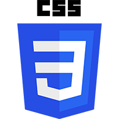
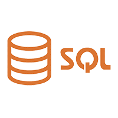

Learning and Development < L&D > Interventions / Trainings Attended
May-August 2023



Production (75%)
Quality Check, Job Review, and Training
Reporting
May-August 2023
MTI Advanced Test Development Co.
Engineer II—Test
+639953264782
Integreon Managed Solutions Inc.
Team Lead
+639953264782
Concentrix Bridgewood
Recruiter I—Talent Acquisition
+639451228572/p>